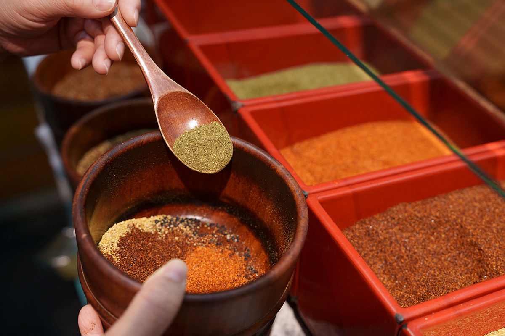
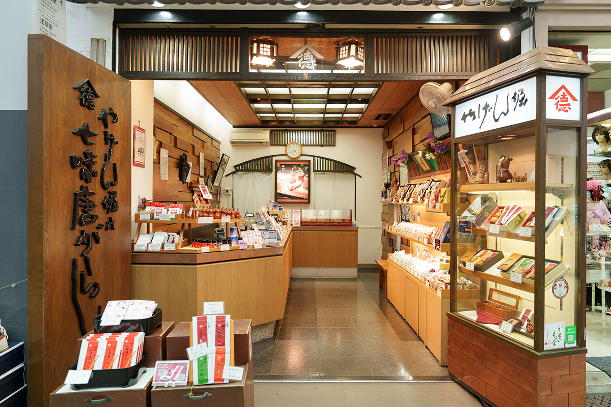
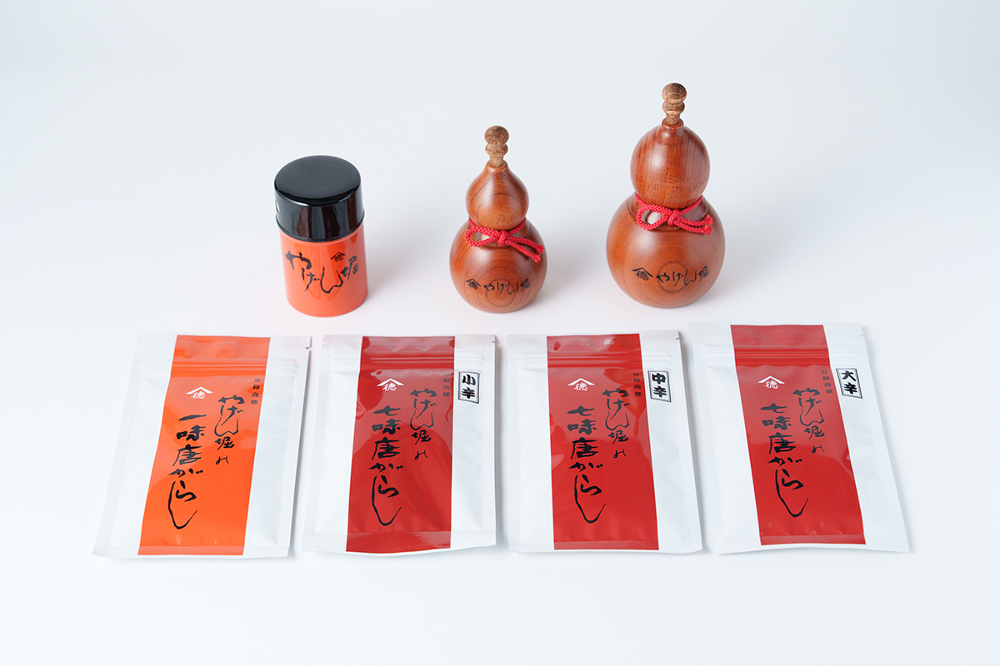
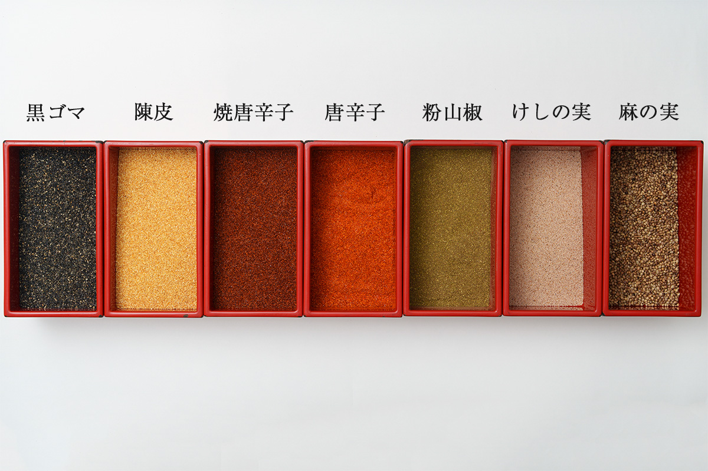
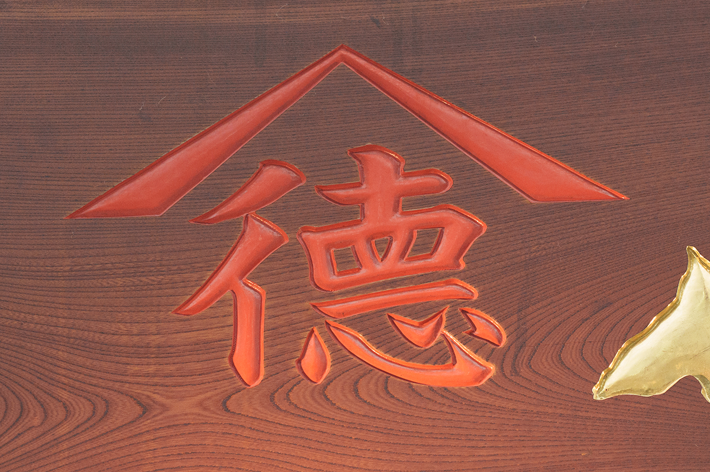
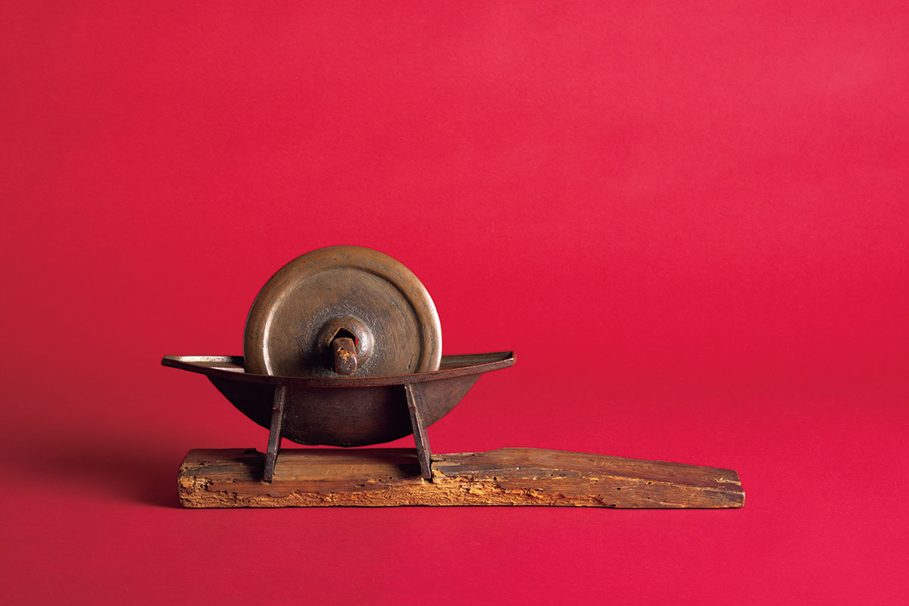

Токио · Асакуса · лавка специй
Yagenbori в Асакусе: семь специй, которые когда-то оценил сёгун

Соль, перец и ситими тогараси: без этой тройки трудно представить японский стол. Ситими, смесь семи специй, стала одной из первых пряных смесей, придуманных в Японии. Зачем специи вообще стали смешивать и почему смесь так прижилась, лучше всего расспросить в Асакусе, в лавке Yagenbori, которую по преданию считают создательницей ситими.
Лавка
Специи на улице Син-Накамисэ
Асакуса входит в число самых популярных туристических мест Японии, а в 2025 году квартал был полон иностранных туристов. Но в этом квартале до сих пор держатся лавки, которые живут повседневными покупками местных жителей: мясные, мисо и сушёные продукты, ножи, щётки из пальмового волокна. Yagenbori стоит на оживлённой торговой улице Син-Накамисэ, в нескольких минутах от храма Сэнсо-дзи, и тоже относится к этим старым, основательным лавкам с одной специальностью.

Зал небольшой. Иностранцы сюда заходят, но чаще видишь местных в домашней одежде: они быстро берут своё и уходят.
«Постоянные покупатели говорят: „Как обычно“ или „Дайте нанаиро“. У ситими всё держится на вкусе и аромате, поэтому мы продаём его маленькими порциями и советуем расходовать побыстрее»
сотрудница отдела продаж, 18 лет в компании
Раньше она много лет стояла за прилавком и слушала покупателей. По её словам, ситими пользуются каждый день, и стоит вкусу хоть немного испортиться, покупатель заметит сразу. Поэтому даже для фасованных пакетиков все семь специй смешивают прямо в лавке и стараются продать, пока смесь свежая.

Семь вкусов
Нанаиро по-эдоски, ситими по-кансайски
«Нанаиро» это сокращение от «нанаиро тогараси», «семицветный перец». Так смесь называли в городе Эдо, старом Токио. «Ситими», «семь вкусов», говорили в Камигате, как раньше называли Кансай с Киото и Осакой. На упаковке Yagenbori написано «ситими тогараси», но жители Асакусы по-прежнему зовут смесь по-эдоски.

Почти у каждой из семи специй есть место в восточной медицине. Ниже то, что о них сказано в справочнике с комментариями к Японской фармакопее и в книгах о кампо, японской травяной медицине.
Семена конопли. Их добавляют в лекарственные сборы как слабительное. В них девять незаменимых аминокислот, которые организм человека сам не синтезирует, поэтому коноплю считают суперфудом.
Мак. Семена мака с приятным поджаристым вкусом кладут и в сладости, например в булочки с бобовой пастой. В них много олеиновой кислоты, клетчатки и витаминов. Алкалоиды в ничтожных количествах, как считается, успокаивают нервы и помогают обрести душевное равновесие.
Молотый сансё. В справочнике это средство для желудка: пробуждает аппетит, улучшает работу кишечника, убивает бактерии и помогает от пищевых отравлений. Сансё ускоряет обмен веществ и кровообращение, в кампо он выводит скопившиеся в животе газы, а в лечебной кухне считается согревающим.
Красный перец. Yagenbori берёт перец двух степеней обжарки. Этот обжарен слабее и жжёт сильнее. Перец согревает тело, поэтому, говорят, его не зря сыплют в собу: гречневая лапша, напротив, считается охлаждающей.
Обжаренный перец. Второй перец обжарен сильнее, он ароматный и с богатым вкусом. В справочнике перец прежде всего сырьё для ароматных средств для желудка. Капсаицин, жгучее вещество перца, в малых дозах усиливает кровоток в слизистой желудка.
Тимпи, мандариновая цедра. Это высушенная кожура спелых мандаринов, например сорта уншу, по справочнику тоже средство для желудка. Старые трактаты пишут, что цедра раскрывает действие других специй в смеси. Принимать её лучше понемногу, так что для ситими она подходит как нельзя лучше.
Чёрный кунжут. В кампо его добавляют в сборы против старения и для прилива сил. В Yagenbori кунжут после обжарки перетирают наполовину: так он лучше пахнет, а полезные вещества легче усваиваются.
История
Смесь, которую одобрил сёгун
Кто и когда придумал нанаиро, ни один сохранившийся документ не говорит. Бумаги, которые хранились в самой лавке, погибли в Великом землетрясении Канто 1923 года и во время войны. Зато уцелел старинный зазывной текст, с которым здесь продавали смесь. В нём сказано, что в девятом месяце 1625 года по старому календарю, при третьем сёгуне Иэмицу Токугаве, смесь поднесли дому сёгуна. Она так понравилась, что лавке пожаловали иероглиф «току» из фамилии Токугава, и с тех пор её знак называется «Яматоку».
Иэмицу Токугава (1604–1651) был третьим сёгуном династии Токугава, правившей Японией больше двухсот шестидесяти лет. При нём сложились многие порядки эпохи Эдо.


Yagenbori, главная лавка на Син-Накамисэ
- Адрес
- Токио, район Тайто, Асакуса, 1-28-3
- Телефон
- +81 3-3626-7716 (головной офис)
- Часы работы
- 10:00–18:00 (по официальному сайту, 2026 год)
- Сайт
- yagenbori.jp
Фото: Ацуси Ямахира.